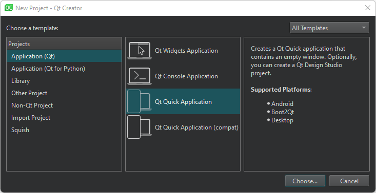
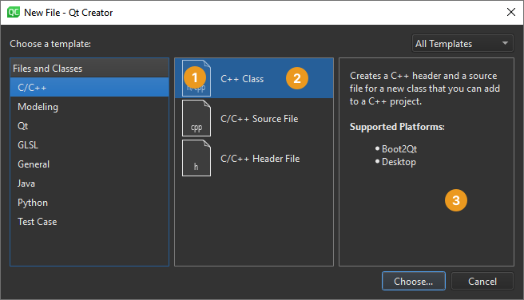

Creating Projects
Create projects to:
- Group files together
- Add custom build steps
- Include forms and resource files
- Specify settings for running applications
To set up a project, you first have to decide what kind of an application you want to develop: do you want a user interface based on Qt Quick or Qt widgets. Second, you have to choose the language to implement the application logic: C++, JavaScript, or Python.
When you set up a new project in Qt Creator, a wizard guides you step-by-step through the process. The wizard templates prompt you to enter the settings that you need for that particular type of project and create the necessary files for you.

You can add your own custom wizards to standardize the way of adding subprojects and classes to a project. In the New Project and New File dialogs you can see an icon (1), a display name (2), and a description (3) of the wizard.

In most project wizards, you can choose the build system to use for building the project: qmake, CMake, Qbs, and possibly others, depending on which plugins you have installed. If you do not get to choose, the project usually uses CMake as the build system.
You can use wizards also to create plain C or C++ projects that use qmake, Qbs, or CMake, but do not use the Qt library.
In addition, you can import projects as generic projects that do not use qmake, Qbs, or CMake. Use Qt Creator as a code editor and fully control the steps and commands used to build the project.
To test applications on devices, you can install toolchains for mobile and embedded development as part of Qt distributions. The installers create kits and specify build and run settings for the installed device types. However, you might need to install and configure some additional software on the devices to be able to connect to them from the development PC.
See also How To: Manage Projects and Custom Wizards.